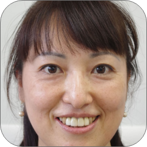
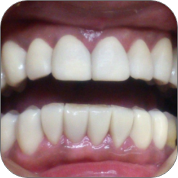

Voice
IT企業 社長 52歳 女性

私は小さいころから歯並びが悪く、お年頃になった時に綺麗に歯並びを治してもらいましたが、ある日ピザを食べていたら歯が折れてしまい…あえなくインプラントとなり、前歯４本だけ綺麗に揃うように治療してもらい大満足でした。でも、綺麗にした前歯４本と残っている歯とのバランスが悪く何か変？と思い相談したところ、提案していただいたのがN3Teethです。
綺麗にしたいけど、悪くなっていない歯を削るのは抵抗があったので、削らない、痛みもないとの説明を受けて、治療をしていただくことにしました。
とても綺麗にお口の中にセットしていただき満足していたら、驚いたことに歯を変えただけなのに…顔までが変わって！最近では会う人に「プチ整形したの？」って言われるほどです。

事務職 30歳 女性

私は小さいときに自転車で転んで前歯を損傷…ついでに歯の植わっている骨まで損傷…骨と歯が癒着し、矯正もできない状況になりました。
もう歯を削り取り、インプラントしかないと言われていた中、このN3Teethと出会いました。
何回か試し合わせをしてもらて満足いくものが仕上がりました。
諦めていた自分の歯がなんの苦痛もなくここまで綺麗にしてもらったことで感謝しかありません。
N3Teethに出会て本当に良かったです。

男性 会社員 40歳

私は生まれつき歯の色が悪く、ホワイトニングをしてもどうしても白くならず削るしかないかと思っていました。
その時にこのN3Teethと出会い、藁をもすがる思いでお願いしました。
以前は歯を隠そう隠そうとして大きく笑えませんでしたが、今では大口を開けてわらうことができるようになりました。
よく笑うようになったからか、顔が優しくなったと言われます。
本当にありがとうございました。

男性 営業職 23歳

歯の隙間がずっとコンプレックスでした。
矯正も考えましたが、長い期間がかかることが嫌で敬遠していました。
知り合いにこういうのがあるよと教えてもらいカウンセリングを受け、シミュレーションしてもらいました。
歯の隙間がなくなるだけでこんなにも顔が違うのかとビックリ！
そしてせっかくなので今の自分の歯よりも白くしてもらいました。
ちょっと白すぎたかな…と思いましたが、営業先で「歯がきれいだね」と言われるようになり、とても満足しています。
自分の彼女も今度治療してもらう予定です！
二人そろって綺麗な歯になるのが楽しみです。